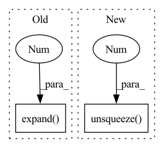

Pattern ID :37021
Before Change
// Block the candidates that exceed the max shift
_, attn_peak = torch.max(attn, dim=1)
condition = (
(attn_peak < (prev_attn_peak + self.max_attn_shift))
.unsqueeze(1)
.expand(-1 , vocab_size)
)
log_probs = torch.where(
condition, log_probs, torch.Tensor([self.minus_inf]).to(device)
)
prev_attn_peak = attn_peakAfter Change
mt_cond = attn_peak > (prev_attn_peak - self.max_attn_shift)
// multiplication equals to element-wise and
cond = (lt_cond * mt_cond).unsqueeze(1 ) .expand(-1, vocab_size)
log_probs = torch.where(
cond, log_probs, torch.Tensor([self.minus_inf]).to(device),
)In pattern: SUPERPATTERN
Frequency: 4
Non-data size: 2
Instances Fragment ID: 105305892
Project Name: speechbrain/speechbrain
Commit Name: c0a3faefaa86bfe264c57d0d8a3da2ed2e866bf5
Time: 2020-06-09
Author: jjery2243542@gmail.com
File Name: speechbrain/decoders/seq2seq.py
M Class Name: S2SBeamSearcher
N Class Name: S2SBeamSearcher
M Method Name: forward(3)
N Method Name: forward(3)
M Parent Class: S2SBaseSearcher
N Parent Class: S2SBaseSearcher
M File Name: speechbrain/decoders/seq2seq.py
N File Name: speechbrain/decoders/seq2seq.py
M Start Line: 296
M End Line: 372
N Start Line: 298
N End Line: 376
Before Change
for i, branch in enumerate(self._branches):
// Choose control for branch of only active command
// We check for (command - 1) since navigational command 0 is ignored
control_pred += branch(embedding) * (i == (command - 1)).expand( batch_size, 3 )
if self.predict_speed:
speed_pred = self._speed_out(embedding)
return control_pred, speed_predAfter Change
def forward(self, embedding, speed, command):
if self._input_speed:
embedding += self._speed_in(speed.unsqueeze(1 ) )
control_pred = 0.
for i, branch in enumerate(self._branches): Fragment ID: 105305893
Project Name: opendilab/di-drive
Commit Name: 7d846cbfe584e0ef3b1af1632d3089f6c1a7b7ed
Time: 2021-10-18
Author: chenruobing@sensetime.com
File Name: core/models/cilrs_model.py
M Class Name: CILRSModel
N Class Name: CILRSModel
M Method Name: forward(4)
N Method Name: forward(4)
M Parent Class: nn.Module
N Parent Class: nn.Module
M File Name: core/models/cilrs_model.py
N File Name: core/models/cilrs_model.py
M Start Line: 92
M End Line: 101
N Start Line: 93
N End Line: 99
Before Change
// combine masks along attended time - first encoder and then decoder
mask = torch.cat(
(
encoder_mask.unsqueeze(1).expand(-1 , decoder_length, -1) ,
decoder_mask.unsqueeze(0).expand(encoder_lengths.size(0), -1, -1),
),
dim=2,After Change
// masking out non-available data and self
decoder_mask = create_mask(decoder_length, decoder_lengths).unsqueeze(1).expand(-1, decoder_length, -1)
// do not attend to steps where data is padded
encoder_mask = create_mask(encoder_lengths.max(), encoder_lengths).unsqueeze(1 ) .expand(-1, decoder_length, -1)
// combine masks along attended time - first encoder and then decoder
mask = torch.cat(
( Fragment ID: 105305890
Project Name: jdb78/pytorch-forecasting
Commit Name: ca4b90615f4bfdeb357d3ad26e492ef8573c7f1c
Time: 2022-04-15
Author: beitner.jan@bcg.com
File Name: pytorch_forecasting/models/temporal_fusion_transformer/__init__.py
M Class Name: TemporalFusionTransformer
N Class Name: TemporalFusionTransformer
M Method Name: get_attention_mask(3)
N Method Name: get_attention_mask(3)
M Parent Class: BaseModelWithCovariates
N Parent Class: BaseModelWithCovariates
M File Name: pytorch_forecasting/models/temporal_fusion_transformer/__init__.py
N File Name: pytorch_forecasting/models/temporal_fusion_transformer/__init__.py
M Start Line: 371
M End Line: 391
N Start Line: 370
N End Line: 395
Before Change
torch.ones(1, 1, dtype=self.t.dtype, device=self.device),
)
)
a = (end_nodes - start_nodes) / (t0[1:] - t0[:-1]).expand(-1 , D) // (num_edges)xD
b = start_nodes - a * t0[:-1].expand(-1, D) // (num_edges)xD
idx = (After Change
self.register_buffer("params", params)
def forward(self, t: torch.Tensor) -> torch.Tensor:
start_nodes = torch.cat((self.begin.unsqueeze(0 ) , self.params)) // (num_edges)xBxD
end_nodes = torch.cat((self.params, self.end.unsqueeze(0))) // (num_edges)xBxD
num_edges, B, D = start_nodes.shape
t0 = torch.cat( Fragment ID: 105305889
Project Name: machinelearninglifescience/stochman
Commit Name: bc92c7edddb2f19f51f7f73909c7c80f8bd53fce
Time: 2021-01-25
Author: skaftenicki@gmail.com
File Name: stochman/curves.py
M Class Name: DiscreteCurve
N Class Name: DiscreteCurve
M Method Name: forward(2)
N Method Name: forward(2)
M Parent Class: BasicCurve
N Parent Class: BasicCurve
M File Name: stochman/curves.py
N File Name: stochman/curves.py
M Start Line: 143
M End Line: 161
N Start Line: 168
N End Line: 186